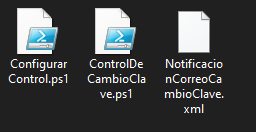

Elementos que componen esta solución:
1. ConfigurarControl.ps1
2. ControlDeCambioClave.ps1
3. NotificacionCorreoCambioClave.xml
ConfigurarControl.ps1:
1. Importación de Ensamblados
Add-Type -AssemblyName System.Windows.Forms
Add-Type -AssemblyName System.Drawing
Add-Type -AssemblyName System.Security
...
Funciones:
2. Creación del Directorio de Configuración
$path = "C:\Windows\PowerShell\"
if (-Not (Test-Path -Path $path)) {
New-Item -Path $path -ItemType Directory
}
3. Carga de Imagen Base64
$LPNG = "Imagen64"
$lenbytes = [Convert]::FromBase64String($LPNG)
$lenmemoria = New-Object System.IO.MemoryStream
$lenmemoria.Write($lenbytes, 0, $lenbytes.Length)
$lenmemoria.Position = 0
$imagenl = [System.Drawing.Image]::FromStream($lenmemoria, $true)
4. Gestión de Claves de Cifrado
function Get-EncryptionKey {
if (-not (Test-Path $keyFile)) {
$key = New-Object byte[] 32
[Security.Cryptography.RNGCryptoServiceProvider]::Create().GetBytes($key)
$key | Set-Content $keyFile -Encoding Byte
}
return Get-Content $keyFile -Encoding Byte
}
function Protect-EmailConfig {
param ([PSCustomObject]$Config)
...
$aes = [System.Security.Cryptography.Aes]::Create()
$aes.Key = $key
$aes.GenerateIV()
...
}
function Unprotect-EmailConfig {
$key = Get-EncryptionKey
...
$aes.IV = $encryptedData[0..15]
$decryptor = $aes.CreateDecryptor()
...
}
5. Creación del Formulario Gráfico
El formulario (System.Windows.Forms.Form) incluye:Componentes Principales
$pictureBox = New-Object System.Windows.Forms.PictureBox
$pictureBox.Image = $imagenl
6. Prueba de Conexión
$botonProbar.Add_Click({
try {
...
$clienteSmtp.Send($mensajeCorreo)
...
}
catch {
...
}
})
7. Configuración Final
$botonConfigurar.Add_Click({
$configuracion = @{
Servidor = $textoServidor.Text
...
}
Protect-EmailConfig $configuracion
...
})
ConfigurarControl.ps1:
1. Componentes Principales
a) Cifrado y Descifrado
El cifrado asegura que las credenciales de correo electrónico estén protegidas. Utiliza AES para descifrar las configuraciones almacenadas.
function Get-EncryptionKey {
if (-not (Test-Path $keyFile)) {
Write-Log "No se encontró el archivo de clave. Asegúrese de que existe en $keyFile" -Level "ERROR"
exit
}
return Get-Content $keyFile -Encoding Byte
}
function Unprotect-EmailConfig {
$key = Get-EncryptionKey
$encryptedData = Get-Content $emailConfigFile -Encoding Byte
$aes = [System.Security.Cryptography.Aes]::Create()
$aes.Key = $key
$aes.IV = $encryptedData[0..15]
$decryptor = $aes.CreateDecryptor()
$decryptedBytes = $decryptor.TransformFinalBlock($encryptedData, 16, $encryptedData.Length - 16)
$jsonConfig = [System.Text.Encoding]::UTF8.GetString($decryptedBytes)
return $jsonConfig | ConvertFrom-Json
}
function Write-Log {
param (
[string]$Message,
[string]$Level = "INFO"
)
$timestamp = Get-Date -Format "yyyy-MM-dd HH:mm:ss"
$logMessage = "$timestamp [$Level] $Message"
Add-Content -Path $logFile -Value $logMessage
Write-Host $logMessage
}
$event = Get-WinEvent -FilterHashtable @{LogName='Security'; ID=4724} -MaxEvents 1
catch {
Write-Log "No se encontraron eventos 4724 (cambio de contraseña)." -Level "WARN"
exit
}
$smtpClient = New-Object Net.Mail.SmtpClient($smtpServer, $smtpPort)
$smtpClient.EnableSsl = $emailConfig.Protocolo -in @("SSL", "STARTTLS")
if ($emailConfig.Autenticacion -eq "UsuarioContrasena") {
$smtpClient.Credentials = New-Object System.Net.NetworkCredential($emailConfig.Usuario, $emailConfig.Contrasena)
}
$mailMessage = New-Object Net.Mail.MailMessage
$mailMessage.From = $from
foreach ($to in $toAddresses) {
$mailMessage.To.Add($to)
}
$mailMessage.Subject = $subject
$mailMessage.Body = $htmlBody
$mailMessage.IsBodyHtml = $true
NotificacionCorreoCambioClave.xml
Descarga los archivos